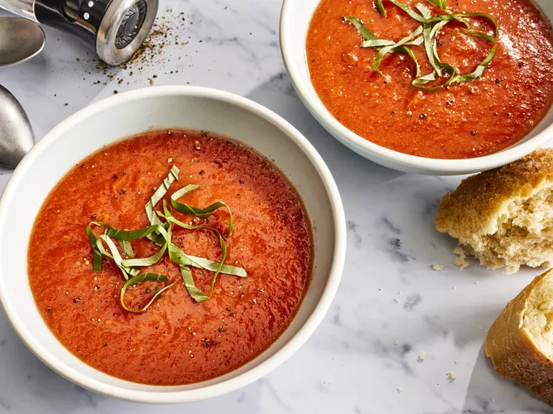

Fresh Tomato Soup

Description
This tomato soup recipe makes a rich, smooth, comforting soup that's quick
to make when you have ripe summer tomatoes. Delicious topped with fresh
basil and a grilled cheese sandwich for the ultimate homemade comfort
food.
Ingredients
- Tomatoes
- Chicken broth
- Garlic
- Onion
- Butter
- Flour
- Sugar and Salt
Steps
- Gather the ingredients.
-
Combine tomatoes, chicken broth, garlic cloves, and a large slice of
onion in a stockpot over medium heat. Bring to a boil, and gently simmer
for about 15 to 20 minutes to blend flavors.
-
Remove from heat and run the mixture through a food mill into a large
bowl, or pan. Discard any stuff left over in the food mill.
-
Melt butter over medium heat in the now empty stockpot. Stir in flour to
make a roux by cooking, whisking constantly, until mixture turns medium
brown.
-
Gradually whisk in a bit of the tomato mixture to prevent lumps from
forming, then stir in the rest.
- Season with sugar and salt to taste.
- Serve hot and enjoy!
<-Back